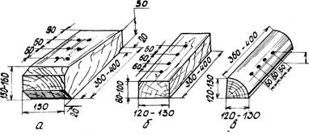

HZM bäşinji usul boýunça berkidilende maşyn uzaboýuna süýşmelerden dört direg dörtgyraň agaç bölegi bilen berkidilýär, direg tigirçekleriniň tigirlenmeginiň öňüni almak üçin bolsa zynjyrlaryň aşagyna dört kese goýma düşelýär.
Nusgalyk direg we gapdal dörtgyraň agaç bölekleri maşynlaryň açyk wagonlarda uzaboýuna we kese süýşmegine päsgel berýär hem-de köp gezek ulanylýar. Olar ýük ugradyjy tarapyndan taýýarlanylýar. Nusgalyk dörtgyraň agaç bölekleri harby eşelonlaryň tehnikasyny berkitmek üçin demir ýol tarapyndan berilýän serişdelerden taýýarlamaga rugsat berilýär.
Agaç direg dörtgyraň bölekleri
Nusgalyk dörtgyraň agaç böleklerinde çüýler üçin deşikler buraw bilen deşilýär.

Agaç goýmalar
Agaç goýmalar HZM berkidilende direg tigirçekleriniň zynjyrlaryň aşaky şahalary boýunça tigirlenmeginiň öňüni almak üçin ulanylýar.
Astlyklar, aralyk gatlaklary we dartyş dörtgyraň agaç bölekleri agramlary paýlamak, tehnikany zeperlenmeden goramak we ş.m. üçin ulanylýar.
Kese astlyklaryň uzynlygy wagonlaryň inine, aralyk gatlaklaryňky bolsa - ýüküň inine deň bolmalydyr. Ýüklemegiň gabaralylygynyň üpjün edilmegi şerti bilen aralyk gatlaklarynyň uçlarynyň ýüklenen ýükden 200 mm çenli çykyp durmagyna rugsat berilýär.
Astlyklaryň we aralyk gatlaklarynyň beýikligi 25 mm-den az bolmaly däldir, dartyş dörtgyraň agaç bölekleriňki bolsa - 50 mm.
Maşyny ýüklemäge taýýarlamak
HZM açyk wagonda berkitmek üçin ýüklemezden öň şular zerurdyr:
— zynjyrlary şosse boýunça hereket edilýän ýaly dartmaly;
— hapadan, gyşyna bolsa gardan we buzdan gowy arassalamaly;
— tormoz ulgamynyň we diňiň saklaýjylarynyň sazlygyny barlamaly;
— ulanyş boýunça gollanma laýyklykda demir ýol boýunça daşamak üçin ýagdaýa getirmeli.
HZM açyk wagonda ýerleşdirmegiň we berkitmegiň tertibi
1. Maşyn açyk wagonda onuň uzaboýuna okuna görä simmetrik goýulýar.
2. Direg dörtgyraň agaç bölekleri düşelýär.
3. Direg tigirçekleriniň we traklaryň gerişleriniň arasyna goýmalar düşelýär.
4. Kese süýşmeleriň öňüni almak üçin maşynlar 12 skoba bilen ýa-da ölçegi 100×100×2000 mm bolan iki gapdal dörtgyraň agaç bölek bilen berkidilýär, olar zynjyrlaryň içki (daşky) tarapyndan düşelýär we her biri diametri 6 mm hem-de uzynlygy 200 mm bolan sekiz çüý bilen çüýlenýär. Zynjyr bilen dörtgyraň agaç bölekleriň arasyndaky aralyk 10—15 mm bolmalydyr.
Ýüklenen maşynlary daşamaga taýýarlamak
Açyk wagonda ýüklenen we berkidilen HZM daşamak üçin şular zerurdyr:
— yza ýöreýiş geçirişine goýmaly we tormozlamaly;
— geçiriş gutusynyň swipçegini we tormoz pedalyny şondan soň möhürlemeli;
— ýangyç beriş swipçegini nol ýagdaýyna goýmaly.